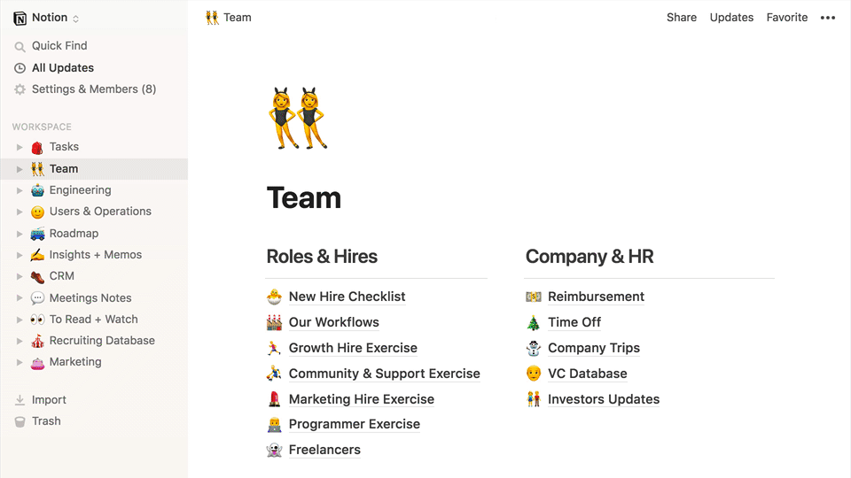
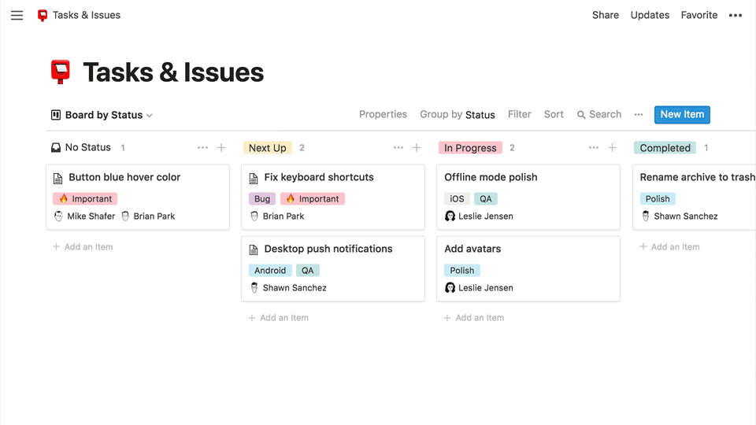
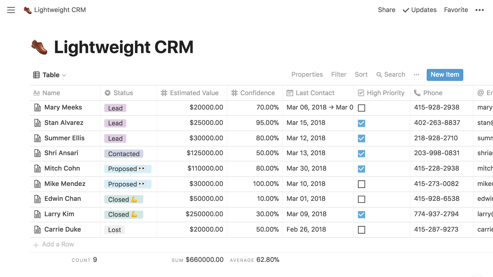
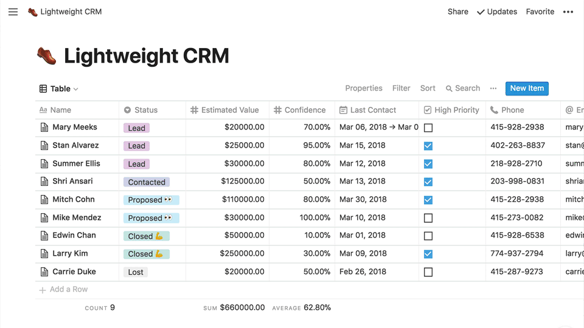

Notion 的内容单位为「页」(Page)，你可以将 Notion 中的页面理解为传统笔记工具中的一条笔记。不同的是，Notion 中的页面支持无限层级，相当于有了类似于文件夹的功能，我们又能在 Notion 的每个页面中记录笔记。
Notion 页面支持「允许评论」「只读」2 种分享方式，在页面右上角设置页面权限之后，我们就可以复制页面的链接分享给其他人查看了。我们还可以输入其他人的邮箱，邀请其他人加入页面进行编辑。
Notion 的编辑工具是一款基于「块」(Block) 的编辑器。简单地说，Notion 中的内容全部由「块」组成的，一段文字是一个「块」、一张图片是一个「块」、一张表格也是一个「块」。
Notion的的编辑器支持 Markdown 语法，它会将 Markdown 文本转为富文本，使用了「所见即所得」的编辑方式；这样做的好处不仅让我们能够方便地使用 Notion 的编辑器排版文本，同时又能利用 Markdown 语法的优势，提高输入效率。
另外，Notion 的编辑器还支持「嵌入模块」(Embed Block)，我们可以在页面中嵌入来自其它网站或者服务的内容，比如一条推文、Google Map 的位置地图等，由于 Notion 只是提取了嵌入网页的信息进行显示，只要嵌入网页中的内容发生变化，Notion 页面中的显示内容会同步进行更新，我们甚至可以在 Notion 页面中直接于其它网页中的内容进行交互，比如在 Notion 中直接查看和缩放 Google Map 中的位置和地图信息。
Notion 在 2.0 版本中加入了对于表格、看板和日历功能的支持，接下来向你介绍这几个功能在 Notion 中的实现方式和效果。
Notion 的看板功能和 Trello 较为相似，它也能像 Trello 一样实现拖拽管理卡片、添加组员和日期的功能。但和 Trello 相比，Notion 缺少了订阅、归档等团队协作常用的功能。
除了任务管理，你可以用 Notion 的看板做点別的事，比如用不同的看板表示家中不同的收纳空间来记录物品位置、或者整理阅读清单等等。
在 Notion 的表格中，每一列的列首决定该列的属性，可选的属性有文字、数字、单选、多选、日期、成员等，你可以利用这些属性中的一个或多个表格内容进行排序和筛选。表格支持简单的数据处理，比如计数、计算时间跨度、加总等。
表格也贯彻了它「无限层级」的设计理念，表格中的每一行都可以展开为一个空白页，以便补充更多细节内容。
你还可以在 Notion 中插入日历，在相应日期上点击即可添加事件，事件可以发生在一天，也可以通过添加终止时间横跨某一个期间段。
可惜的是，Notion 的日历不支持与第三方服务同步，也不能订阅，它的用途更多是作为笔记中的时间索引，帮你更好地将一个时间段内的任务串联起来。
值得一提的是，表格、看板和日历功能在 Notion 不是相互独立的三部分，它们可以相互进行转换，为一个项目提供不同的视角。
只要点击左上角的「view」，都可以将当前视图转换成另两种视图。举个例子，当你将一个表格转换成看板视图后，表格中的每一行都会转换成看板中的一张卡片，看板视图中的变化与表格是联动的，如果你在看板视图中将一张 Tag 为「iOS」的卡片拖到了「Android」群组，该张卡片的属性会变成「Android」，在日历视图中亦然。